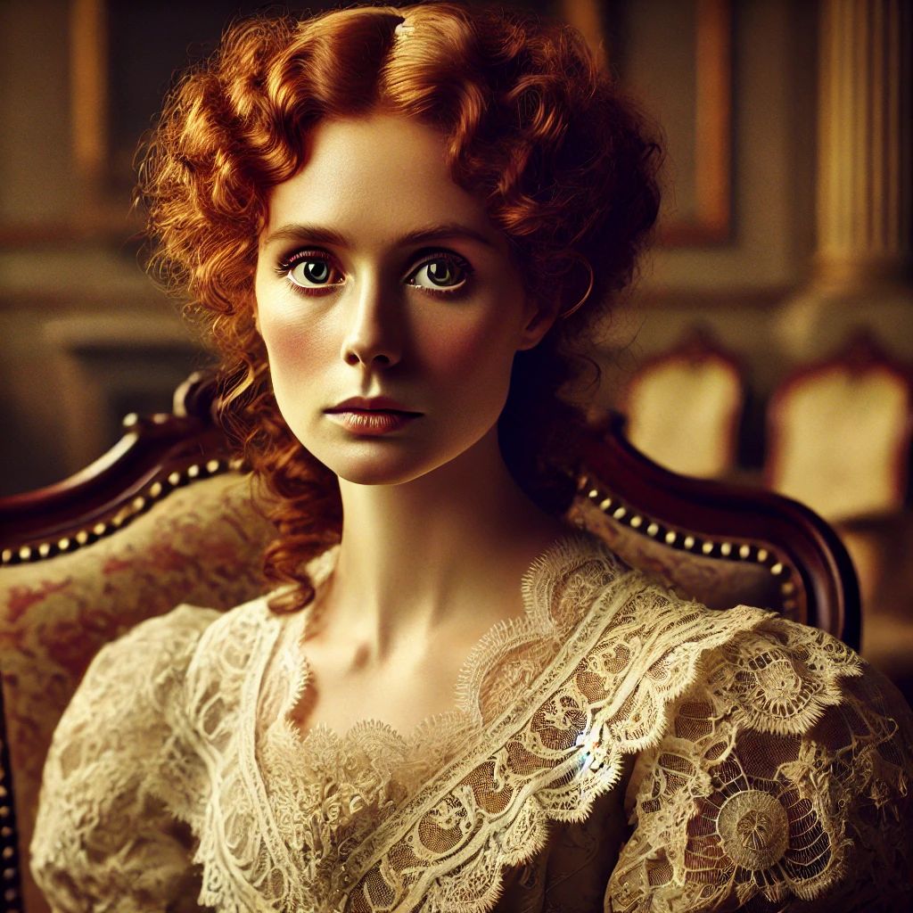

Rozhovor s Lady Eleanor
Vy (detektiv Blackwood):
„Co víte o Bratrstvu černé růže, Lady Eleanor?“
Lady Eleanor:
(Zamrzne a přimhouří oči) „To jméno už jsem dlouho neslyšela. Pokud by však existovali, varovala bych vás, abyste nepátral příliš hluboko. Některé pravdy je lepší neodhalovat.“